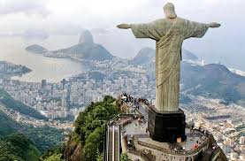
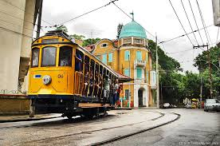
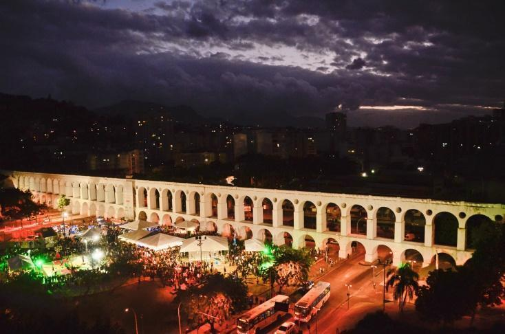

Guia do Rio de Janeiro
Nenhuma outra cidade do mundo ostentaria com tanto charme o título de “Maravilhosa” como o Rio de Janeiro. Aos caprichos da natureza, que colocou mar e montanha lado a lado em perfeita harmonia, juntam-se o Cristo Redentor, o Pão de Açúcar, o Maracanã e o estilo de vida despojado e festeiro do carioca. Mais que um cartão-postal, o Rio é um estado de espírito, sempre alegre e de alto-astral. Também, pudera – a cidade tem cerca de 30 quilômetros de orla contornada por calçadões e ciclovias tomadas por gente o dia inteiro caminhando, pedalando, correndo ou apenas observando o movimento.

Uma vez na região central, aproveite para aportar no bucólico bairro de Santa Teresa, com ruas estreitas e repletas de sobrados que funcionam como ateliês, bares e lojas. Os novos bondes começaram a circular no fim de julho em um pequeno trecho de 1,7 km, entre os largos da Carioca e Curvelo. Até outubro, o passeio é de graça e acontece de segunda a sábado, das 11h às 16h. As obras continuam até 2017, quando os bondes deverão estar circulando por toda a malha de 10,5 km de trilhos, levando ao Largo das Neves e ao Silvestre.

O Rio, porém, também é da noite. No bairro da Lapa, ponto de encontro dos fãs do samba, também abre espaço para os mais diversos estilos musicais que invadem casas como o Circo Voador e a Fundição Progresso.
Pertinho da Lapa, a antiga capital do Império e da República guarda um belíssimo acervo arquitetônico dos séculos 19 e 20 que hoje abriga museus e espaços culturais. Reunidos no Centro da cidade, os prédios podem ser conhecidos em um passeio a pé pela Cinelândia, onde estão construções como o Theatro Municipal e o Museu Nacional de Belas Artes; e arredores da Praça XV, contornada pelo Paço Imperial, o Centro Cultural Banco do Brasil, a Casa França-Brasil...
